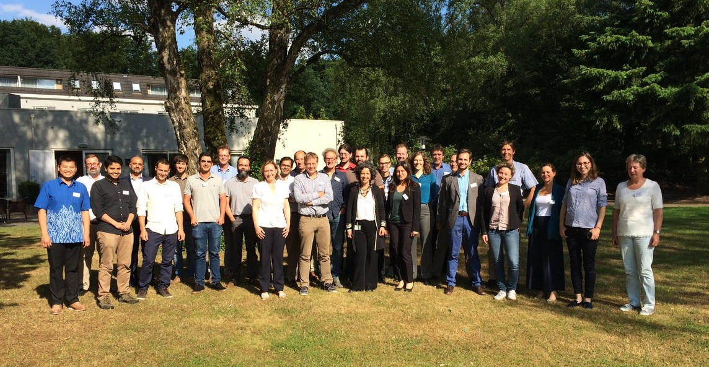

Notícias & Novidades
Marcos de investigação, reconhecimento do setor e lançamentos de produtos da biorrefinaria de química verde da NatureXtracts.

Magnificent
Um projeto de 4 anos financiado pelo BBI-RIA, com uma contribuição da UE de 5.330.572,50 €, que transforma microalgas em ingredientes valiosos para alimentação, ração animal e cosmética.

NX Immunity Essentials
Em co-branding com a VitaCholine™ e a Albion™, a NatureXtracts lançou o NX Immunity Essentials, uma seleção de minerais, vitaminas e colina para fortalecer o sistema imunitário.